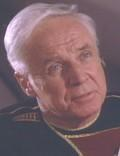

Gregory Quinn |
|
|||
|  |
Ammiraglio della Flotta Stellare, grande amico di
Jean-Luc Picard. Nel
2364 si trova su
Relva VII e sale a bordo
dell'Enterprise in orbita attorno al pianeta per svolgere una
delicata indagine sull'integrità di Picard. In seguito un
parassita
alieno si impossessa del corpo
dell'ammiraglio, facendolo diventare parte della cospirazione
fermata da Picard nel
2364. Grazie all'intervento della dottoressa
Crusher, il parassita
viene rimosso con successo.